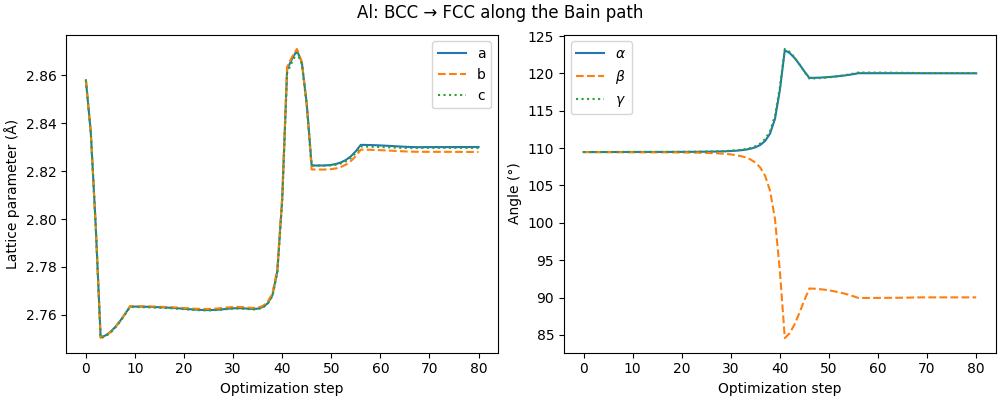
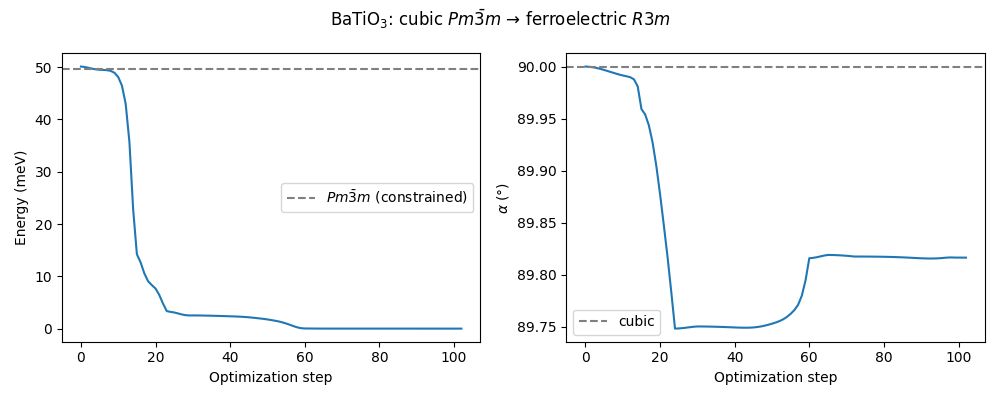

Note
Go to the end to download the full example code.
Geometry relaxation with unconstrained MLIPs¶
This recipe shows how to perform geometry optimization with unconstrained machine-learning interatomic potentials (MLIPs), and what tools are available to control symmetry during relaxation.
Unconstrained models, such as the Point-Edge Transformer (PET) learns symmetry through data augmentation rather than having it encoded by construction (see also the PET-MAD recipe). This means that PET’s predicted forces and stresses can have a small nonzero residual even on perfect high-symmetry structures. During optimization, this residual breaks degeneracies: if a structure sits on a saddle point, the optimizer will move off it toward a nearby minimum. The practical consequence is that a plain relaxation does not necessarily preserve the initial symmetry. When the starting configuration is close to a local minimum, this introduces small distortions that could be problematic for some applications (e.g. when automatically building brillouin zone paths for phonon calculations). When the starting configuration is unstable, the unconstrained model will naturally find the nearest minimum, which is often desirable but not always (e.g., when you want to study a specific metastable or high-symmetry phase).
This recipe covers the workflow for handling this behavior:
Unconstrained relaxation: let the optimizer find the nearest minimum. Use
spglibto identify the symmetry of the result andstandardize_cellto obtain a clean primitive cell.Constrained relaxation with
FixSymmetry: when you want to study a specific phase (e.g., a metastable or high-symmetry structure), lock in its symmetry before optimizing.Rotational averaging: a calculator-level option that reduces the symmetry-breaking residual by averaging predictions over a grid of rotations, and can be useful when one wants to reduce the residual distortion in unconstrained optimizations.
We demonstrate these tools on two systems:
Al (Bain path): BCC aluminum is a saddle point. Unconstrained relaxation drives the cell to FCC along the Bain path.
BaTiO₃ (perovskite): unconstrained relaxation of the cubic \(Pm\bar{3}m\) structure converges to the ferroelectric \(R3m\) ground state.
import warnings
import numpy as np
import matplotlib.pyplot as plt
import ase.io
import chemiscope
from ase import Atoms
from ase.build import bulk
from ase.constraints import FixSymmetry
from ase.filters import FrechetCellFilter
from ase.optimize import FIRE
import spglib
from upet.calculator import UPETCalculator
# Suppress warnings about matrix logarithm accuracy issued by scipy during geometry
# optimization to avoid cluttering the output
warnings.filterwarnings(
"ignore",
category=RuntimeWarning,
message="logm result may be inaccurate, approximate err",
)
# sphinx_gallery_thumbnail_number = 1
Setup¶
We use the small (S) variant of PET-MAD v1.5.0, which is trained on a dataset of approximately 200k structures computed at the r2SCAN level of theory.
FMAX = 1e-4 # eV/Å, force convergence threshold
STEPS = 500 # max optimization steps
DEVICE = "cpu"
# We suggest using double precison (``dtype="float64"``) for geometry optimization, as
# it allows smaller values of the ``fmax`` convergence threshold and more reliable
# symmetry detection.
calc = UPETCalculator(
model="pet-mad-s",
device=DEVICE,
dtype="float64",
version="1.5.0",
)
Helper functions¶
def report_symmetry(atoms, label="", loose_tol=0.02):
"""Detect and report space group using spglib."""
spglib_cell = (
atoms.get_cell(),
atoms.get_scaled_positions(),
atoms.get_atomic_numbers(),
)
sg_loose = spglib.get_spacegroup(spglib_cell, symprec=loose_tol)
sg_tight = spglib.get_spacegroup(spglib_cell, symprec=1e-6)
print(
f"{label:20s} loose ({loose_tol}): {str(sg_loose):15s}"
f" tight (1e-6): {str(sg_tight)}"
)
Al along the Bain path¶
The ground state structure for Aluminum has FCC symmetry (\(Fm\bar{3}m\)). The BCC structure is a saddle point along the Bain path, a continuous tetragonal deformation connecting BCC and FCC.
Unconstrained relaxation¶
Because PET does not enforce point-group symmetry, the predicted stress on the perfect BCC cell has a small anisotropic residual. This is enough to push the optimizer off the saddle, and the cell slides down to FCC.
atoms_al = bulk("Al", "bcc", a=3.3, cubic=False)
report_symmetry(atoms_al, "Initial (BCC)")
atoms_al.calc = calc
opt_al = FIRE(FrechetCellFilter(atoms_al), trajectory="al_bain.traj")
opt_al.run(fmax=FMAX, steps=STEPS)
report_symmetry(atoms_al, "After relaxation")
Initial (BCC) loose (0.02): Im-3m (229) tight (1e-6): Im-3m (229)
Step Time Energy fmax
FIRE: 0 20:40:57 -3.967994 0.771156
FIRE: 1 20:40:59 -3.983930 0.611374
FIRE: 2 20:40:59 -4.002858 0.302599
FIRE: 3 20:40:59 -4.007780 0.115900
FIRE: 4 20:40:59 -4.007872 0.108697
FIRE: 5 20:40:59 -4.008032 0.094793
FIRE: 6 20:40:59 -4.008219 0.075152
FIRE: 7 20:40:59 -4.008388 0.051117
FIRE: 8 20:40:59 -4.008495 0.024310
FIRE: 9 20:40:59 -4.008516 0.010660
FIRE: 10 20:40:59 -4.008516 0.010541
FIRE: 11 20:41:00 -4.008516 0.010304
FIRE: 12 20:41:00 -4.008517 0.009955
FIRE: 13 20:41:00 -4.008517 0.009499
FIRE: 14 20:41:00 -4.008518 0.008944
FIRE: 15 20:41:00 -4.008518 0.008303
FIRE: 16 20:41:00 -4.008519 0.007587
FIRE: 17 20:41:00 -4.008520 0.006729
FIRE: 18 20:41:00 -4.008520 0.005729
FIRE: 19 20:41:00 -4.008521 0.004608
FIRE: 20 20:41:00 -4.008522 0.005658
FIRE: 21 20:41:00 -4.008523 0.007392
FIRE: 22 20:41:00 -4.008523 0.009113
FIRE: 23 20:41:00 -4.008524 0.010703
FIRE: 24 20:41:00 -4.008526 0.012051
FIRE: 25 20:41:00 -4.008529 0.013068
FIRE: 26 20:41:00 -4.008533 0.013716
FIRE: 27 20:41:00 -4.008539 0.014072
FIRE: 28 20:41:00 -4.008548 0.014422
FIRE: 29 20:41:01 -4.008562 0.015342
FIRE: 30 20:41:01 -4.008584 0.017698
FIRE: 31 20:41:01 -4.008623 0.022571
FIRE: 32 20:41:01 -4.008692 0.031109
FIRE: 33 20:41:01 -4.008825 0.044400
FIRE: 34 20:41:01 -4.009090 0.063713
FIRE: 35 20:41:01 -4.009668 0.091837
FIRE: 36 20:41:01 -4.011036 0.136485
FIRE: 37 20:41:01 -4.014638 0.216365
FIRE: 38 20:41:01 -4.025261 0.362872
FIRE: 39 20:41:01 -4.057183 0.508943
FIRE: 40 20:41:01 -4.106908 0.177130
FIRE: 41 20:41:01 -4.094556 0.433682
FIRE: 42 20:41:01 -4.100537 0.270707
FIRE: 43 20:41:01 -4.106547 0.285012
FIRE: 44 20:41:01 -4.109848 0.275357
FIRE: 45 20:41:01 -4.112282 0.156179
FIRE: 46 20:41:02 -4.112807 0.055468
FIRE: 47 20:41:02 -4.112839 0.052727
FIRE: 48 20:41:02 -4.112899 0.049582
FIRE: 49 20:41:02 -4.112980 0.050155
FIRE: 50 20:41:02 -4.113074 0.050002
FIRE: 51 20:41:02 -4.113173 0.048416
FIRE: 52 20:41:02 -4.113269 0.044675
FIRE: 53 20:41:02 -4.113356 0.038213
FIRE: 54 20:41:02 -4.113433 0.027657
FIRE: 55 20:41:02 -4.113487 0.012382
FIRE: 56 20:41:02 -4.113496 0.007272
FIRE: 57 20:41:02 -4.113496 0.007063
FIRE: 58 20:41:02 -4.113496 0.006655
FIRE: 59 20:41:02 -4.113497 0.006067
FIRE: 60 20:41:03 -4.113497 0.005327
FIRE: 61 20:41:03 -4.113498 0.004474
FIRE: 62 20:41:03 -4.113498 0.003557
FIRE: 63 20:41:03 -4.113498 0.003274
FIRE: 64 20:41:03 -4.113499 0.003344
FIRE: 65 20:41:03 -4.113499 0.003178
FIRE: 66 20:41:03 -4.113499 0.002675
FIRE: 67 20:41:03 -4.113500 0.002234
FIRE: 68 20:41:03 -4.113500 0.001817
FIRE: 69 20:41:03 -4.113500 0.001178
FIRE: 70 20:41:03 -4.113500 0.001161
FIRE: 71 20:41:03 -4.113500 0.001127
FIRE: 72 20:41:03 -4.113500 0.001076
FIRE: 73 20:41:03 -4.113500 0.001009
FIRE: 74 20:41:03 -4.113500 0.000929
FIRE: 75 20:41:04 -4.113500 0.000835
FIRE: 76 20:41:04 -4.113500 0.000730
FIRE: 77 20:41:04 -4.113500 0.000603
FIRE: 78 20:41:04 -4.113500 0.000454
FIRE: 79 20:41:04 -4.113500 0.000281
FIRE: 80 20:41:04 -4.113500 0.000090
After relaxation loose (0.02): Fm-3m (225) tight (1e-6): P-1 (2)
The optimizer converged from BCC (\(Im\bar{3}m\)) to FCC (\(Fm\bar{3}m\)). We can track the cell parameters along the trajectory: the BCC primitive cell (\(a = b = c\), \(\alpha = \beta = \gamma \approx 109.5°\)) deforms continuously into the FCC primitive cell.
traj = ase.io.Trajectory("al_bain.traj")
cell_parameters = np.array([frame.cell.cellpar() for frame in traj])
a, b, c, alpha, beta, gamma = cell_parameters.T
steps = np.arange(len(traj))
fig, (ax1, ax2) = plt.subplots(1, 2, figsize=(10, 4), constrained_layout=True)
ax1.plot(steps, a, label="a")
ax1.plot(steps, b, label="b", ls="--")
ax1.plot(steps, c, label="c", ls=":")
ax1.set_xlabel("Optimization step")
ax1.set_ylabel("Lattice parameter (Å)")
ax1.legend()
ax2.plot(steps, alpha, label=r"$\alpha$")
ax2.plot(steps, beta, label=r"$\beta$", ls="--")
ax2.plot(steps, gamma, label=r"$\gamma$", ls=":")
ax2.set_xlabel("Optimization step")
ax2.set_ylabel("Angle (°)")
ax2.legend()
fig.suptitle("Al: BCC → FCC along the Bain path")
plt.show()

The chemiscope widget lets you inspect the trajectory frame by frame. The BCC (red) and FCC (blue) conventional cells are overlaid: watch the BCC cube deform as the FCC cube becomes regular.
traj_frames = ase.io.read("al_bain.traj", index=":")
al_energies = np.array([frame.get_potential_energy() for frame in traj_frames])
def conventional_cell_edges(cell, kind):
"""Return the 12 edges of a conventional cubic cell as (position, vector) pairs."""
a1, a2, a3 = np.array(cell)
# BCC conventional cell vectors from BCC primitive vectors
A_bcc, B_bcc, C_bcc = a2 + a3, a1 + a3, a1 + a2
if kind == "bcc":
A, B, C = A_bcc, B_bcc, C_bcc
origin = np.zeros(3)
else: # fcc
# Bain correspondence: FCC shares one BCC edge, the other two are
# face diagonals of the BCC cube
A = B_bcc
B = A_bcc + C_bcc
C = A_bcc - C_bcc
origin = np.zeros(3)
corners = [
origin,
origin + A,
origin + B,
origin + C,
origin + A + B,
origin + A + C,
origin + B + C,
origin + A + B + C,
]
edge_pairs = [
(0, 1),
(0, 2),
(0, 3),
(1, 4),
(1, 5),
(2, 4),
(2, 6),
(3, 5),
(3, 6),
(4, 7),
(5, 7),
(6, 7),
]
return [
(corners[i].tolist(), (corners[j] - corners[i]).tolist()) for i, j in edge_pairs
]
conv_shapes = {}
for edge_idx in range(12):
for kind, color in [("bcc", "0xFF0000"), ("fcc", "0x0000FF")]:
structure_params = []
for frame in traj_frames:
edges = conventional_cell_edges(frame.cell[:], kind)
pos, vec = edges[edge_idx]
structure_params.append({"position": pos, "vector": vec})
conv_shapes[f"{kind}_edge_{edge_idx}"] = {
"kind": "cylinder",
"parameters": {
"global": {"radius": 0.05, "color": color},
"structure": structure_params,
},
}
chemiscope.show(
traj_frames,
properties={
"step": np.arange(len(traj_frames)),
"energy": al_energies,
},
shapes=conv_shapes,
settings=chemiscope.quick_settings(
x="step",
y="energy",
map_settings={"joinPoints": True},
structure_settings={
"unitCell": True,
"supercell": (4, 5, 6),
"shape": [f"bcc_edge_{i}" for i in range(12)]
+ [f"fcc_edge_{i}" for i in range(12)],
"keepOrientation": True,
},
),
)

/home/runner/work/atomistic-cookbook/atomistic-cookbook/.nox/pet-relaxation/lib/python3.12/site-packages/chemiscope/input.py:347: UserWarning: The target of the property 'step' is ambiguous because there is the same number of atoms and structures. We will assume target=structure
properties = _expand_properties(properties, n_structures, n_atoms)
/home/runner/work/atomistic-cookbook/atomistic-cookbook/.nox/pet-relaxation/lib/python3.12/site-packages/chemiscope/input.py:347: UserWarning: The target of the property 'energy' is ambiguous because there is the same number of atoms and structures. We will assume target=structure
properties = _expand_properties(properties, n_structures, n_atoms)
Detecting the relaxed symmetry¶
Even if the relaxed structure is very close to FCC and is converged to a very tight
force threshold, the small symmetry breaking due to the unconstrained nature of PET
can make symmetry detection tricky. When using a tight symprec value of 1e-6,
spglib detects the lowest-symmetry space group (\(P\bar{1}\)).
A looser tolerance of 0.02 correctly identifies the high-symmetry
\(Fm\bar{3}m\). We recommend scanning the symprec parameter to find a
“plateau” that identifies the true symmetry of the relaxed structure.
spglib_cell = (
atoms_al.get_cell(),
atoms_al.get_scaled_positions(),
atoms_al.get_atomic_numbers(),
)
for symprec in np.logspace(-4, np.log10(0.1), 10):
print(
f" symprec={symprec:.4f} "
f"{spglib.get_spacegroup(spglib_cell, symprec=symprec)}"
)
symprec=0.0001 P-1 (2)
symprec=0.0002 P-1 (2)
symprec=0.0005 P-1 (2)
symprec=0.0010 P-1 (2)
symprec=0.0022 I4/mmm (139)
symprec=0.0046 I4/mmm (139)
symprec=0.0100 Fm-3m (225)
symprec=0.0215 Fm-3m (225)
symprec=0.0464 Fm-3m (225)
symprec=0.1000 Fm-3m (225)
At tight tolerances, spglib detects the residual shear as a highly asymmetric
\(P\bar{1}\) state. As the tolerance is relaxed, it identifies an
\(I4/mmm\) (body-centered tetragonal) intermediate state before recognizing the
“true” \(Fm\bar{3}m\) (FCC) ground state.
Once the plateau is identified, standardize_cell snaps the coordinates
onto ideal Wyckoff positions and the lattice vectors onto the exact
\(Fm\bar{3}m\) cell, removing the residual numerical noise.
std_data = spglib.standardize_cell(spglib_cell, to_primitive=True, symprec=0.05)
al_fcc = Atoms(
numbers=std_data[2],
scaled_positions=std_data[1],
cell=std_data[0],
pbc=True,
)
report_symmetry(al_fcc, "FCC (spglib)")
FCC (spglib) loose (0.02): Fm-3m (225) tight (1e-6): Fm-3m (225)
Constrained relaxation¶
The standardized cell from spglib has exact \(Fm\bar{3}m\) symmetry,
but its lattice parameters may differ slightly from the model’s true minimum.
We can refine them with FixSymmetry, which projects forces and stresses
onto the symmetry-invariant subspace at every step, ensuring the cell stays
exactly FCC throughout the optimization.
al_fcc.set_constraint(FixSymmetry(al_fcc))
al_fcc.calc = calc
opt_al_const = FIRE(FrechetCellFilter(al_fcc), trajectory="al_fcc_const.traj")
opt_al_const.run(fmax=FMAX, steps=STEPS)
report_symmetry(al_fcc, "Constrained FCC")
al_fcc.set_constraint(None)
Step Time Energy fmax
FIRE: 0 20:41:04 -4.112804 0.001644
FIRE: 1 20:41:04 -4.112804 0.001223
FIRE: 2 20:41:05 -4.112804 0.000489
FIRE: 3 20:41:05 -4.112804 0.000371
FIRE: 4 20:41:05 -4.112804 0.000347
FIRE: 5 20:41:05 -4.112804 0.000301
FIRE: 6 20:41:05 -4.112804 0.000236
FIRE: 7 20:41:05 -4.112804 0.000155
FIRE: 8 20:41:05 -4.112804 0.000065
Constrained FCC loose (0.02): Fm-3m (225) tight (1e-6): Fm-3m (225)
Rotational averaging¶
A complementary approach to FixSymmetry is rotational averaging: the calculator
averages its predictions over a grid of rotations (plus inversion),
reducing the symmetry-breaking residual at the source. Since the group of rotations is
continuous, the averaging is approximate, but the residual can be controlled via the
rotational_average_order parameter, which sets the order of the integration grid
(formally, spherical harmonics up to this order are integrated exactly).
The cheapest choice is rotational_average_order=3, which averages predictions on
a grid of 24 rotations \(\times\) 2 inversions.
Rotational averaging and FixSymmetry address different aspects: FixSymmetry
projects forces and stresses onto the symmetry-invariant subspace of a
specific space group, while rotational averaging reduces the model’s O(3)-breaking
noise for any structure. They can be combined. However, if the target space group is
known, FixSymmetry is generally preferred: it is exact, cheap, and sufficient.
Rotational averaging is most useful in exploratory settings where the
final symmetry is not known in advance, but it comes at a significant computational
and memory cost.
calc_symm = UPETCalculator(
model="pet-mad-s",
device=DEVICE,
dtype="float64",
version="1.5.0",
rotational_average_order=3,
)
atoms_al = bulk("Al", "bcc", a=3.3, cubic=False)
atoms_al.calc = calc_symm
opt_al = FIRE(FrechetCellFilter(atoms_al))
opt_al.run(fmax=FMAX, steps=STEPS)
print("After relaxation with symmetrized calculator")
spglib_cell = (
atoms_al.get_cell(),
atoms_al.get_scaled_positions(),
atoms_al.get_atomic_numbers(),
)
for symprec in np.logspace(-4, np.log10(0.1), 10):
print(
f" symprec={symprec:.4f} "
f"{spglib.get_spacegroup(spglib_cell, symprec=symprec)}"
)
Step Time Energy fmax
FIRE: 0 20:41:07 -3.968206 0.770140
FIRE: 1 20:41:08 -3.984132 0.610368
FIRE: 2 20:41:08 -4.003049 0.301676
FIRE: 3 20:41:09 -4.007969 0.112781
FIRE: 4 20:41:09 -4.008060 0.105553
FIRE: 5 20:41:10 -4.008220 0.091600
FIRE: 6 20:41:11 -4.008407 0.071880
FIRE: 7 20:41:11 -4.008575 0.047730
FIRE: 8 20:41:12 -4.008682 0.020756
FIRE: 9 20:41:12 -4.008702 0.009528
FIRE: 10 20:41:13 -4.008702 0.009405
FIRE: 11 20:41:14 -4.008702 0.009161
FIRE: 12 20:41:14 -4.008703 0.008800
FIRE: 13 20:41:15 -4.008703 0.008328
FIRE: 14 20:41:15 -4.008704 0.007753
FIRE: 15 20:41:16 -4.008704 0.007084
FIRE: 16 20:41:17 -4.008705 0.006333
FIRE: 17 20:41:17 -4.008705 0.005425
FIRE: 18 20:41:18 -4.008706 0.004349
FIRE: 19 20:41:19 -4.008706 0.003112
FIRE: 20 20:41:19 -4.008706 0.001763
FIRE: 21 20:41:20 -4.008706 0.002627
FIRE: 22 20:41:20 -4.008706 0.002614
FIRE: 23 20:41:21 -4.008706 0.002588
FIRE: 24 20:41:22 -4.008706 0.002549
FIRE: 25 20:41:22 -4.008706 0.002497
FIRE: 26 20:41:23 -4.008706 0.002435
FIRE: 27 20:41:24 -4.008706 0.002362
FIRE: 28 20:41:24 -4.008706 0.002279
FIRE: 29 20:41:25 -4.008706 0.002180
FIRE: 30 20:41:25 -4.008706 0.002061
FIRE: 31 20:41:26 -4.008706 0.001924
FIRE: 32 20:41:27 -4.008706 0.001814
FIRE: 33 20:41:27 -4.008707 0.002116
FIRE: 34 20:41:28 -4.008707 0.002457
FIRE: 35 20:41:29 -4.008707 0.002828
FIRE: 36 20:41:29 -4.008707 0.003219
FIRE: 37 20:41:30 -4.008707 0.003617
FIRE: 38 20:41:30 -4.008707 0.004010
FIRE: 39 20:41:31 -4.008708 0.004388
FIRE: 40 20:41:32 -4.008708 0.004756
FIRE: 41 20:41:32 -4.008709 0.005143
FIRE: 42 20:41:33 -4.008711 0.005617
FIRE: 43 20:41:34 -4.008713 0.006304
FIRE: 44 20:41:34 -4.008716 0.007392
FIRE: 45 20:41:35 -4.008722 0.009128
FIRE: 46 20:41:35 -4.008731 0.011798
FIRE: 47 20:41:36 -4.008749 0.015706
FIRE: 48 20:41:37 -4.008782 0.021188
FIRE: 49 20:41:37 -4.008849 0.028747
FIRE: 50 20:41:38 -4.008988 0.039360
FIRE: 51 20:41:38 -4.009293 0.054859
FIRE: 52 20:41:39 -4.009992 0.077841
FIRE: 53 20:41:40 -4.011633 0.109755
FIRE: 54 20:41:40 -4.015422 0.144458
FIRE: 55 20:41:41 -4.023342 0.174253
FIRE: 56 20:41:41 -4.035801 0.250612
FIRE: 57 20:41:42 -4.043102 0.458496
FIRE: 58 20:41:43 -4.052969 0.495201
FIRE: 59 20:41:44 -4.069253 0.509862
FIRE: 60 20:41:44 -4.088824 0.402912
FIRE: 61 20:41:45 -4.104643 0.247719
FIRE: 62 20:41:46 -4.106352 0.282678
FIRE: 63 20:41:47 -4.107173 0.246573
FIRE: 64 20:41:47 -4.108498 0.186885
FIRE: 65 20:41:48 -4.109924 0.147799
FIRE: 66 20:41:49 -4.111108 0.161508
FIRE: 67 20:41:50 -4.111888 0.156716
FIRE: 68 20:41:50 -4.112369 0.126357
FIRE: 69 20:41:51 -4.112660 0.109037
FIRE: 70 20:41:52 -4.112693 0.098588
FIRE: 71 20:41:53 -4.112713 0.095995
FIRE: 72 20:41:53 -4.112751 0.090896
FIRE: 73 20:41:54 -4.112803 0.083469
FIRE: 74 20:41:55 -4.112864 0.073984
FIRE: 75 20:41:56 -4.112928 0.062805
FIRE: 76 20:41:56 -4.112990 0.050395
FIRE: 77 20:41:57 -4.113045 0.037337
FIRE: 78 20:41:58 -4.113095 0.029193
FIRE: 79 20:41:58 -4.113135 0.026610
FIRE: 80 20:41:59 -4.113163 0.022772
FIRE: 81 20:42:00 -4.113174 0.019698
FIRE: 82 20:42:01 -4.113175 0.019281
FIRE: 83 20:42:01 -4.113176 0.018458
FIRE: 84 20:42:02 -4.113178 0.017249
FIRE: 85 20:42:03 -4.113181 0.015686
FIRE: 86 20:42:03 -4.113183 0.013809
FIRE: 87 20:42:04 -4.113185 0.011665
FIRE: 88 20:42:05 -4.113187 0.009313
FIRE: 89 20:42:06 -4.113189 0.006553
FIRE: 90 20:42:06 -4.113189 0.003666
FIRE: 91 20:42:07 -4.113189 0.005808
FIRE: 92 20:42:08 -4.113189 0.005765
FIRE: 93 20:42:09 -4.113190 0.005679
FIRE: 94 20:42:09 -4.113190 0.005552
FIRE: 95 20:42:10 -4.113190 0.005385
FIRE: 96 20:42:11 -4.113190 0.005180
FIRE: 97 20:42:11 -4.113190 0.004938
FIRE: 98 20:42:12 -4.113190 0.004663
FIRE: 99 20:42:13 -4.113190 0.004324
FIRE: 100 20:42:14 -4.113190 0.003913
FIRE: 101 20:42:14 -4.113190 0.003424
FIRE: 102 20:42:15 -4.113191 0.002856
FIRE: 103 20:42:16 -4.113191 0.002338
FIRE: 104 20:42:17 -4.113191 0.002621
FIRE: 105 20:42:17 -4.113191 0.002832
FIRE: 106 20:42:18 -4.113191 0.002910
FIRE: 107 20:42:19 -4.113191 0.002794
FIRE: 108 20:42:19 -4.113192 0.002426
FIRE: 109 20:42:20 -4.113192 0.001768
FIRE: 110 20:42:21 -4.113192 0.000809
FIRE: 111 20:42:22 -4.113192 0.000575
FIRE: 112 20:42:22 -4.113192 0.000563
FIRE: 113 20:42:23 -4.113192 0.000540
FIRE: 114 20:42:24 -4.113192 0.000506
FIRE: 115 20:42:24 -4.113192 0.000462
FIRE: 116 20:42:25 -4.113192 0.000409
FIRE: 117 20:42:26 -4.113192 0.000389
FIRE: 118 20:42:27 -4.113192 0.000380
FIRE: 119 20:42:27 -4.113192 0.000364
FIRE: 120 20:42:28 -4.113192 0.000337
FIRE: 121 20:42:29 -4.113192 0.000292
FIRE: 122 20:42:30 -4.113192 0.000225
FIRE: 123 20:42:30 -4.113192 0.000127
FIRE: 124 20:42:31 -4.113192 0.000145
FIRE: 125 20:42:32 -4.113192 0.000143
FIRE: 126 20:42:32 -4.113192 0.000138
FIRE: 127 20:42:33 -4.113192 0.000132
FIRE: 128 20:42:34 -4.113192 0.000124
FIRE: 129 20:42:35 -4.113192 0.000114
FIRE: 130 20:42:35 -4.113192 0.000103
FIRE: 131 20:42:36 -4.113192 0.000091
After relaxation with symmetrized calculator
symprec=0.0001 Immm (71)
symprec=0.0002 Immm (71)
symprec=0.0005 Immm (71)
symprec=0.0010 I4/mmm (139)
symprec=0.0022 Fm-3m (225)
symprec=0.0046 Fm-3m (225)
symprec=0.0100 Fm-3m (225)
symprec=0.0215 Fm-3m (225)
symprec=0.0464 Fm-3m (225)
symprec=0.1000 Fm-3m (225)
The symmetrized model successfully protects the angular symmetry of the cell, keeping the internal angles closer to 90 degrees. The resulting structure has higher symmetry with space group \(Immm\) (body-centered orthorhombic) at tight tolerances. As the tolerance is increased, it still perfectly retraces the \(I4/mmm\) Bain path before reaching the \(Fm\bar{3}m\) minimum, which is recovered at tighter tolerances than before thanks to the reduced noise.
BaTiO₃: spontaneous ferroelectric distortion¶
Barium titanate is a prototypical ferroelectric perovskite. At 0 K the cubic \(Pm\bar{3}m\) phase is a saddle point: Ti displaces off-center, breaking cubic symmetry and stabilizing the rhombohedral \(R3m\) phase. Contrary to the case of Al, which we simulated with a primitive cell so that the deformation was entirely driven by the cell degrees of freedom, the ferroelectric distortion in BaTiO₃ is primarily an internal displacement of Ti relative to the oxygen cage, which involves primarily a distortion within the cell, and only a small accompanying shear distortion of the cell itself.
An unconstrained relaxation starting from the cubic cell will naturally
fall off the saddle and converge to the \(R3m\) basin. We then use
spglib to identify the resulting symmetry and extract a clean primitive
cell.
We also show how FixSymmetry can lock in the cubic \(Pm\bar{3}m\)
phase when that is the structure of interest (e.g., for computing phonons
at the saddle point).
a_bto = 4.00
bto_cubic = Atoms(
symbols="BaTiO3",
scaled_positions=[
[0.0, 0.0, 0.0], # Ba
[0.5, 0.5, 0.5], # Ti
[0.5, 0.5, 0.0], # O1
[0.5, 0.0, 0.5], # O2
[0.0, 0.5, 0.5], # O3
],
cell=[a_bto, a_bto, a_bto],
pbc=True,
)
report_symmetry(bto_cubic, "Initial (cubic)")
Initial (cubic) loose (0.02): Pm-3m (221) tight (1e-6): Pm-3m (221)
Constrained relaxation¶
As for the case of Al, we can use FixSymmetry to lock in the cubic \(Pm\bar{3}m\) phase, by projecting forces and stresses onto the symmetry-invariant subspace at every optimization step. It must therefore be instantiated from a cell that already has the target symmetry—applying it to an already-distorted cell would lock in the wrong (lower) symmetry.
bto_const = bto_cubic.copy()
bto_const.set_constraint(FixSymmetry(bto_const))
bto_const.calc = calc
# The mask [True]*3 + [False]*3 allows the three lattice lengths to relax
# while freezing the cell angles, preventing the filter from introducing
# angular distortions that FixSymmetry does not constrain.
opt_const = FIRE(FrechetCellFilter(bto_const, mask=[True] * 3 + [False] * 3))
opt_const.run(fmax=FMAX, steps=STEPS)
report_symmetry(bto_const, "Constrained")
# Remove the constraint so that subsequent energy queries return the raw
# model prediction rather than the symmetry-projected one.
bto_const.set_constraint(None)
Step Time Energy fmax
FIRE: 0 20:42:36 -43.224032 0.053880
FIRE: 1 20:42:36 -43.224115 0.049369
FIRE: 2 20:42:37 -43.224255 0.040721
FIRE: 3 20:42:37 -43.224404 0.028653
FIRE: 4 20:42:37 -43.224515 0.014172
FIRE: 5 20:42:37 -43.224551 0.001509
FIRE: 6 20:42:37 -43.224551 0.001478
FIRE: 7 20:42:37 -43.224551 0.001415
FIRE: 8 20:42:37 -43.224551 0.001323
FIRE: 9 20:42:37 -43.224551 0.001202
FIRE: 10 20:42:37 -43.224551 0.001057
FIRE: 11 20:42:38 -43.224551 0.000889
FIRE: 12 20:42:38 -43.224551 0.000703
FIRE: 13 20:42:38 -43.224551 0.000480
FIRE: 14 20:42:38 -43.224551 0.000220
FIRE: 15 20:42:38 -43.224551 0.000074
Constrained loose (0.02): Pm-3m (221) tight (1e-6): Pm-3m (221)
Unconstrained relaxation¶
By removing the constraint, we can run a relaxation using the raw PET model. This allows breaking the cubic symmetry and finding the nearest minimum, triggering the ferroelectric distortion.
bto_unconst = bto_cubic.copy()
bto_unconst.calc = calc
opt_unconst = FIRE(FrechetCellFilter(bto_unconst), trajectory="bto_unconst.traj")
opt_unconst.run(fmax=FMAX, steps=STEPS)
report_symmetry(bto_unconst, "Unconstrained")
Step Time Energy fmax
FIRE: 0 20:42:38 -43.224032 0.055951
FIRE: 1 20:42:38 -43.224120 0.051388
FIRE: 2 20:42:38 -43.224270 0.042638
FIRE: 3 20:42:38 -43.224436 0.030442
FIRE: 4 20:42:39 -43.224571 0.020556
FIRE: 5 20:42:39 -43.224647 0.025803
FIRE: 6 20:42:39 -43.224680 0.033193
FIRE: 7 20:42:39 -43.224725 0.042625
FIRE: 8 20:42:39 -43.224867 0.055578
FIRE: 9 20:42:39 -43.225234 0.073590
FIRE: 10 20:42:39 -43.226039 0.099300
FIRE: 11 20:42:39 -43.227700 0.136475
FIRE: 12 20:42:39 -43.231169 0.187436
FIRE: 13 20:42:40 -43.238454 0.238419
FIRE: 14 20:42:40 -43.251334 0.203554
FIRE: 15 20:42:40 -43.259915 0.223516
FIRE: 16 20:42:40 -43.261483 0.194561
FIRE: 17 20:42:40 -43.263578 0.144037
FIRE: 18 20:42:40 -43.265084 0.084394
FIRE: 19 20:42:40 -43.265816 0.116076
FIRE: 20 20:42:40 -43.266482 0.155132
FIRE: 21 20:42:40 -43.267695 0.161073
FIRE: 22 20:42:41 -43.269350 0.129498
FIRE: 23 20:42:41 -43.270784 0.054005
FIRE: 24 20:42:41 -43.270941 0.086872
FIRE: 25 20:42:41 -43.271051 0.078533
FIRE: 26 20:42:41 -43.271232 0.063140
FIRE: 27 20:42:41 -43.271423 0.043123
FIRE: 28 20:42:41 -43.271563 0.028387
FIRE: 29 20:42:41 -43.271622 0.028429
FIRE: 30 20:42:41 -43.271617 0.038548
FIRE: 31 20:42:41 -43.271621 0.038109
FIRE: 32 20:42:42 -43.271630 0.037255
FIRE: 33 20:42:42 -43.271643 0.036028
FIRE: 34 20:42:42 -43.271659 0.034499
FIRE: 35 20:42:42 -43.271677 0.032765
FIRE: 36 20:42:42 -43.271696 0.030951
FIRE: 37 20:42:42 -43.271716 0.029208
FIRE: 38 20:42:42 -43.271737 0.027556
FIRE: 39 20:42:42 -43.271760 0.026285
FIRE: 40 20:42:42 -43.271784 0.025693
FIRE: 41 20:42:43 -43.271809 0.025882
FIRE: 42 20:42:43 -43.271837 0.026570
FIRE: 43 20:42:43 -43.271872 0.027156
FIRE: 44 20:42:43 -43.271917 0.026979
FIRE: 45 20:42:43 -43.271975 0.025622
FIRE: 46 20:42:43 -43.272043 0.023237
FIRE: 47 20:42:43 -43.272119 0.020829
FIRE: 48 20:42:43 -43.272198 0.019520
FIRE: 49 20:42:43 -43.272284 0.018333
FIRE: 50 20:42:44 -43.272385 0.020465
FIRE: 51 20:42:44 -43.272502 0.024543
FIRE: 52 20:42:44 -43.272625 0.028042
FIRE: 53 20:42:44 -43.272765 0.028597
FIRE: 54 20:42:44 -43.272945 0.024416
FIRE: 55 20:42:44 -43.273158 0.020256
FIRE: 56 20:42:44 -43.273402 0.021244
FIRE: 57 20:42:44 -43.273670 0.011945
FIRE: 58 20:42:44 -43.273900 0.013905
FIRE: 59 20:42:45 -43.274058 0.008700
FIRE: 60 20:42:45 -43.274111 0.010050
FIRE: 61 20:42:45 -43.274116 0.008484
FIRE: 62 20:42:45 -43.274124 0.005754
FIRE: 63 20:42:45 -43.274131 0.003972
FIRE: 64 20:42:45 -43.274135 0.004501
FIRE: 65 20:42:45 -43.274137 0.004045
FIRE: 66 20:42:45 -43.274137 0.003802
FIRE: 67 20:42:45 -43.274137 0.003332
FIRE: 68 20:42:45 -43.274137 0.002670
FIRE: 69 20:42:46 -43.274138 0.001867
FIRE: 70 20:42:46 -43.274138 0.001046
FIRE: 71 20:42:46 -43.274138 0.001079
FIRE: 72 20:42:46 -43.274138 0.001107
FIRE: 73 20:42:46 -43.274138 0.001105
FIRE: 74 20:42:46 -43.274138 0.001100
FIRE: 75 20:42:46 -43.274138 0.001094
FIRE: 76 20:42:46 -43.274138 0.001085
FIRE: 77 20:42:46 -43.274138 0.001074
FIRE: 78 20:42:47 -43.274138 0.001060
FIRE: 79 20:42:47 -43.274138 0.001044
FIRE: 80 20:42:47 -43.274138 0.001024
FIRE: 81 20:42:47 -43.274138 0.000998
FIRE: 82 20:42:47 -43.274139 0.000965
FIRE: 83 20:42:47 -43.274139 0.000925
FIRE: 84 20:42:47 -43.274139 0.000877
FIRE: 85 20:42:47 -43.274139 0.000822
FIRE: 86 20:42:47 -43.274139 0.000761
FIRE: 87 20:42:47 -43.274139 0.000742
FIRE: 88 20:42:48 -43.274139 0.000719
FIRE: 89 20:42:48 -43.274139 0.000623
FIRE: 90 20:42:48 -43.274139 0.000594
FIRE: 91 20:42:48 -43.274139 0.000598
FIRE: 92 20:42:48 -43.274140 0.000614
FIRE: 93 20:42:48 -43.274140 0.000607
FIRE: 94 20:42:48 -43.274140 0.000538
FIRE: 95 20:42:48 -43.274140 0.000392
FIRE: 96 20:42:48 -43.274140 0.000367
FIRE: 97 20:42:49 -43.274140 0.000284
FIRE: 98 20:42:49 -43.274140 0.000184
FIRE: 99 20:42:49 -43.274140 0.000251
FIRE: 100 20:42:49 -43.274140 0.000207
FIRE: 101 20:42:49 -43.274140 0.000130
FIRE: 102 20:42:49 -43.274140 0.000074
Unconstrained loose (0.02): R3m (160) tight (1e-6): P1 (1)
Identifying the ferroelectric phase¶
The unconstrained structure has broken cubic symmetry, but the
detected space group depends on the spglib tolerance. We scan
symprec to find the plateau that identifies the true symmetry.
spglib_cell = (
bto_unconst.get_cell(),
bto_unconst.get_scaled_positions(),
bto_unconst.get_atomic_numbers(),
)
for symprec in np.logspace(-3, np.log10(0.2), 10):
print(
f" symprec={symprec:.4f} "
f"{spglib.get_spacegroup(spglib_cell, symprec=symprec)}"
)
symprec=0.0010 P1 (1)
symprec=0.0018 P1 (1)
symprec=0.0032 P1 (1)
symprec=0.0058 P1 (1)
symprec=0.0105 Cm (8)
symprec=0.0190 R3m (160)
symprec=0.0342 R3m (160)
symprec=0.0616 R3m (160)
symprec=0.1110 R3m (160)
symprec=0.2000 R3m (160)
A clear \(R3m\) plateau appears. The relaxed cell still carries small numerical noise that breaks exact \(R3m\) symmetry. standardize_cell snaps coordinates onto ideal Wyckoff positions and lattice vectors onto the exact \(R3m\) cell, giving a clean starting point for further calculations (e.g., phonons).
std_data = spglib.standardize_cell(spglib_cell, to_primitive=True, symprec=0.05)
bto_r3m = Atoms(
numbers=std_data[2],
scaled_positions=std_data[1],
cell=std_data[0],
pbc=True,
)
report_symmetry(bto_r3m, "R3m (spglib)")
R3m (spglib) loose (0.02): R3m (160) tight (1e-6): R3m (160)
Energy comparison¶
The unconstrained relaxation converges to a lower-energy structure.
dE = bto_const.get_potential_energy() - bto_unconst.get_potential_energy()
print(f"E(cubic) - E(R3m): {dE * 1000:.1f} meV")
cellpar_c = bto_const.cell.cellpar()
cellpar_u = bto_unconst.cell.cellpar()
print(f" Cubic: a = {cellpar_c[0]:.4f} Å")
print(f" Ferroelectric: a = {cellpar_u[0]:.4f} Å, α = {cellpar_u[3]:.2f}°")
E(cubic) - E(R3m): 49.6 meV
Cubic: a = 3.9949 Å
Ferroelectric: a = 4.0262 Å, α = 89.82°
The energy and cell parameter evolution during the unconstrained relaxation shows how the optimizer moves away from the cubic saddle point toward the \(R3m\) minimum.
traj_bto = ase.io.read("bto_unconst.traj", index=":")
energies = np.array([frame.get_potential_energy() for frame in traj_bto])
angles = np.array([frame.cell.cellpar()[3] for frame in traj_bto])
fig, (ax1, ax2) = plt.subplots(1, 2, figsize=(10, 4))
ax1.plot(np.arange(len(energies)), (energies - energies[-1]) * 1000)
ax1.axhline(
(bto_const.get_potential_energy() - energies[-1]) * 1000,
color="gray",
ls="--",
label=r"$Pm\bar{3}m$ (constrained)",
)
ax1.set_xlabel("Optimization step")
ax1.set_ylabel("Energy (meV)")
ax1.legend()
ax2.plot(np.arange(len(angles)), angles)
ax2.axhline(90, color="gray", ls="--", label="cubic")
ax2.set_xlabel("Optimization step")
ax2.set_ylabel(r"$\alpha$ (°)")
ax2.legend()
fig.suptitle(r"BaTiO$_3$: cubic $Pm\bar{3}m$ → ferroelectric $R3m$")
plt.tight_layout()
plt.show()

The chemiscope widget below lets you inspect the trajectory frame by frame. Notice how Ti gradually displaces relative to the oxygen cage as the ferroelectric distortion develops.
vec_forces_bto = chemiscope.ase_vectors_to_arrows(traj_bto, "forces", scale=10)
chemiscope.show(
structures=traj_bto,
properties={
"step": np.arange(len(traj_bto)),
"energy": energies,
},
shapes={
"forces": vec_forces_bto,
},
settings=chemiscope.quick_settings(
map_settings={
"x": {"property": "step"},
"y": {"property": "energy"},
"joinPoints": True,
},
structure_settings={
"unitCell": True,
"supercell": (2, 2, 2),
"bonds": False,
"keepOrientation": True,
"shape": ["forces"],
},
),
)
Conclusions¶
In summary, geometry relaxation with unconstrained MLIPs requires attention to symmetry, but the tools are straightforward:
Unconstrained relaxation finds the nearest minimum. Use
spglibto identify the resulting symmetry andstandardize_cellto obtain a clean primitive cell.``FixSymmetry`` locks in a specific space group when you want to study a particular phase (stable or metastable). It is exact, cheap, and the recommended default when the target symmetry is known.
Rotational averaging reduces the model’s symmetry-breaking noise at the calculator level. It is useful in exploratory settings but expensive; prefer
FixSymmetrywhen possible.
To verify that the relaxed structures are true minima, one should compute their phonon dispersions. This is the subject of the phonon uncertainty quantification recipe.
Total running time of the script: (1 minutes 59.245 seconds)